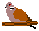

|  |
This is an interactive game inspired by the Iterated Prisoner's Dilemma game theory as described in the book The Selfish Gene by Richard Dawkins (1989 p. 205). This game theory is useful to demonstrate the evolution of co-operative behaviour. Coded in Javascript by Wayne Davis.
Scenario: you and your colleague, Lucifer, are in jail and suspected of committing a crime. You are isolated from each other and do not know how the other will respond to questioning. The police invite both of you to implicate the other in the crime (defect). What happens depends on what both of you do, but neither of you know how the other will respond. If Lucifer betrays you (yields to the temptation to defect) while you remain silent, then you receive the longest jail term while Lucifer gets off free (and visa versa). If you both choose to cooperate with each other (not the police) by remaining silent, there is insufficient evidence to convict both of you, so you are both given a light sentence for a lesser crime. If both of you decide to defect, then you have condemned each other to slightly reduced but still heavy sentences.
The payoff in this game is a reduction in prison sentencing of very good, fairly good, fairly bad or very bad, which is translated into a point score system as follows:
| ||||||||||||||
The game is played iteratively for a number of rounds until it is ended (as if you are repeatedly interrogated for separate crimes). The scores from each round are accumulated, so the object is to optimise the point score before reaching game over. Game over is determined randomly anywhere between 1 and 100 rounds. At the end of the game, the scores are translated into percentages of the best possible scores. The Mutual Outcome rating represents the combined scores achieved by both players compared to the best possible combined score. Start the game by clicking either the co-operate or defect button below and then base your next choice on the outcome.
|
||||
|---|---|---|---|---|
Strategy Definitions Random Intervention (%): 1 2 5 10 20 30 40 Simulation Rate (secs / round): 0.05 0.2 0.5 1 2 5 10 30 Number of Simulation Rounds: 50 100 200 500 1,000 10,000
Customised Strategy 1: T=
P=
R=
S=
B=
| ||||
Spatialised Prisoner's Dilemma: Evolution Simulator
Iterated Prisoner's Dilemma related resources
Reference: Richard Dawkins (1989). The Selfish Gene. Second edition. Oxford University Press.
Example of how to cite this website: Davis, W 1997, Iterated Prisoner's Dilemma Online Game and Simulation, accessed 27 February 2017, <www.iterated-prisoners-dilemma.net>
© Copyright 1997 - 2017,
www.iterated-prisoners-dilemma.net